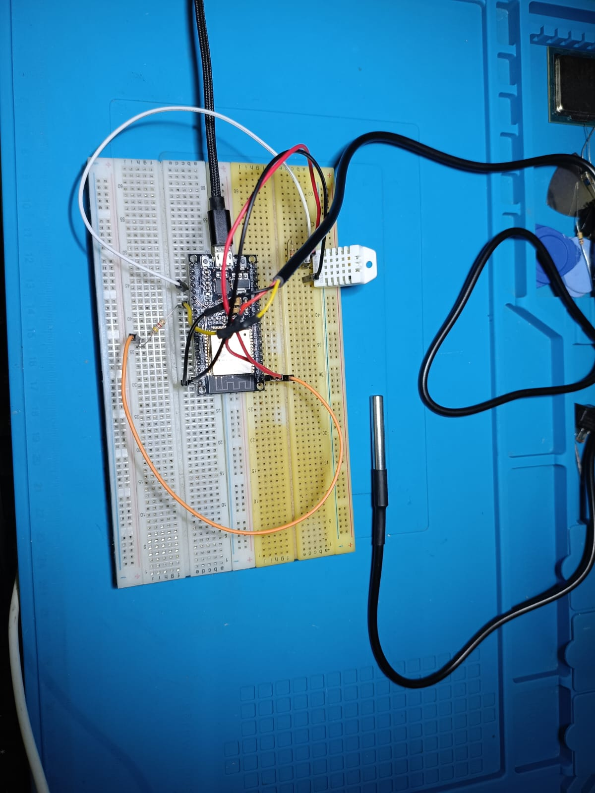

IoT & Hardware
Engenharia UNIVESP
Sistema IoT de Telemetria e Monitoramento Térmico para Cadeia de Frio
Problema: Monitoramento contínuo de temperatura e umidade em salas de vacina hospitalares para eliminar perdas de imunobiológicos por oscilação térmica desregulada.
Solução & Arquitetura: Firmware em ESP32 com sensoriamento de dupla precisão (DS18B20 para conservadoras e DHT22 para ambiente). Disparo de telemetria HTTP/JSON autenticada via API Key para API PHP/MySQL com dashboard e supervisão em tempo real.
ESP32
C/C++
PHP REST API
MySQL
DS18B20
DHT22
Código & Docs
Produção / UNIVESP